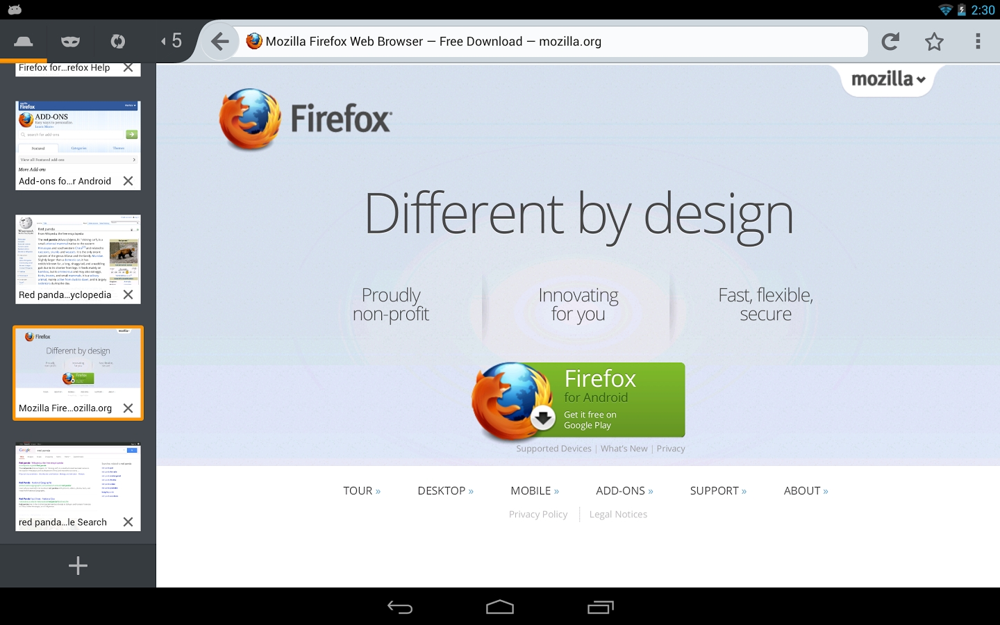
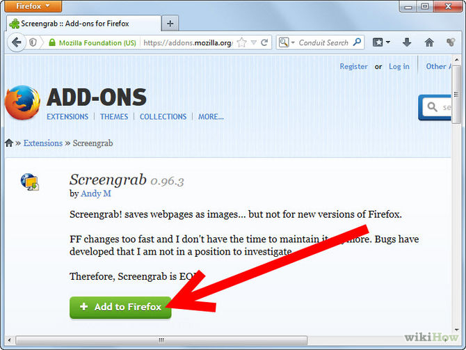

Secure and fast web browser
| Firefox 38.0.5 Secure and fast web browser |
The Firefox web browser empowers you to browse web pages faster, more safely, and more efficiently. Key features include pop-up blocking to stop those annoying ads, tabbed browsing to let you view multiple web pages in a single window, and opening links in the background so that they're ready for viewing when you're ready to read them. The toolbars are fully customizable. Don't like the default order of the buttons? Right click, select "customize" and drag that button where you want it. You can expand Firefox's functionality using a wide variety of extensions. These offer you the ability to customize your web experience through automatic form completion, flash blocking, in-browser games, or development tools to help you study how web pages are made. There is also a range of themes available to let you alter the look of the browser. The easy transition system imports all of your settings, including favourites, passwords and other data from Internet Explorer and other browsers, so you can start surfing right away. Possibly the best reason to start using Firefox is its enhanced security. Built with your security in mind from the start, Firefox keeps your computer safe from malicious spyware by preventing harmful ActiveX controls, and offers a comprehensive set of privacy tools keep your online activity private. In this age of rampant virus, trojan and phishing attacks, Firefox provides a secure alternative. |
  |
{kind=link}
{kind=link}